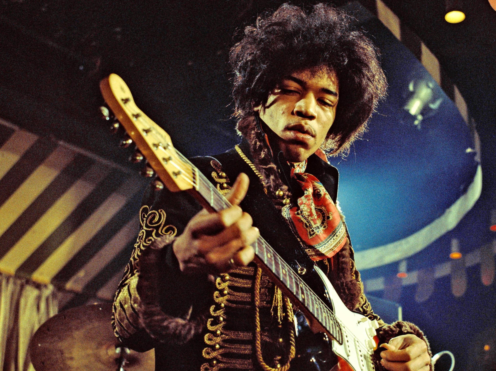
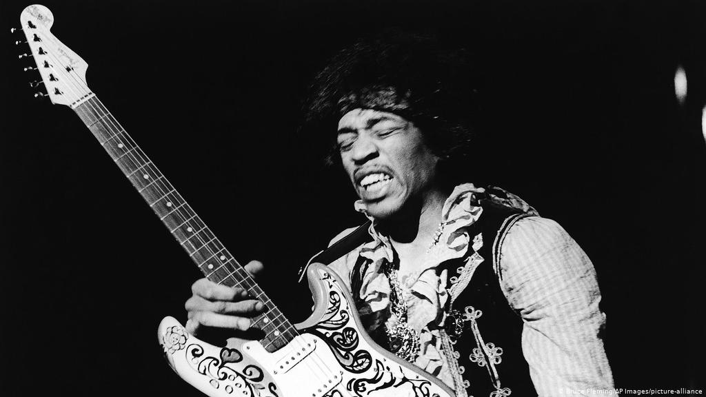
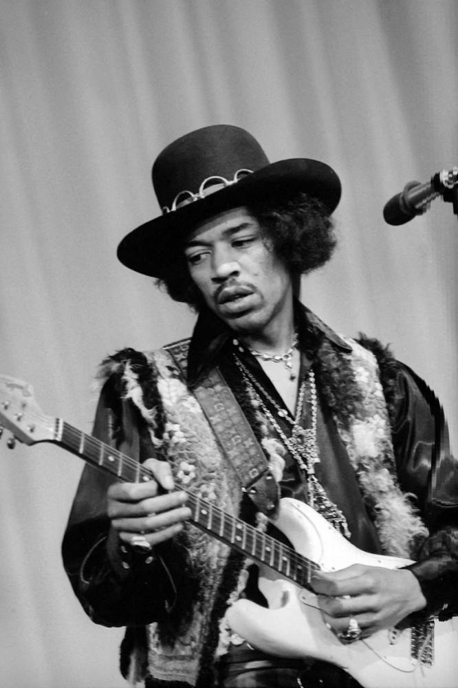
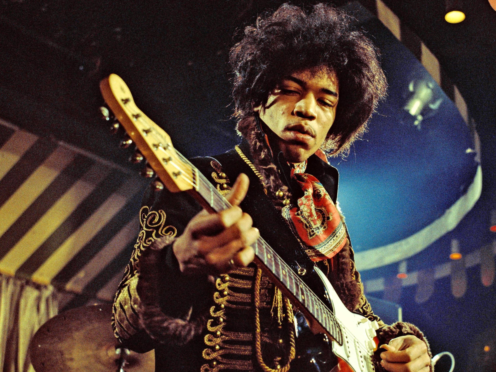
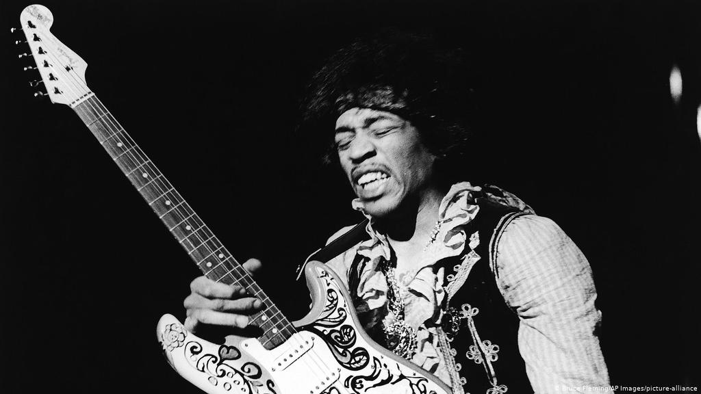
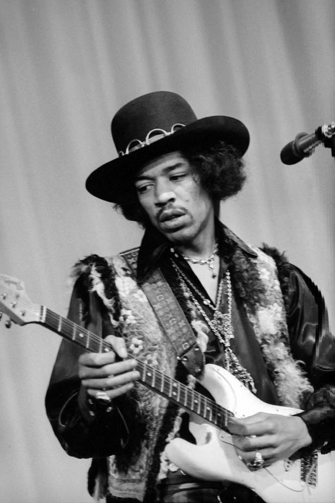
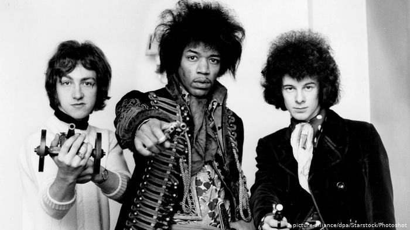
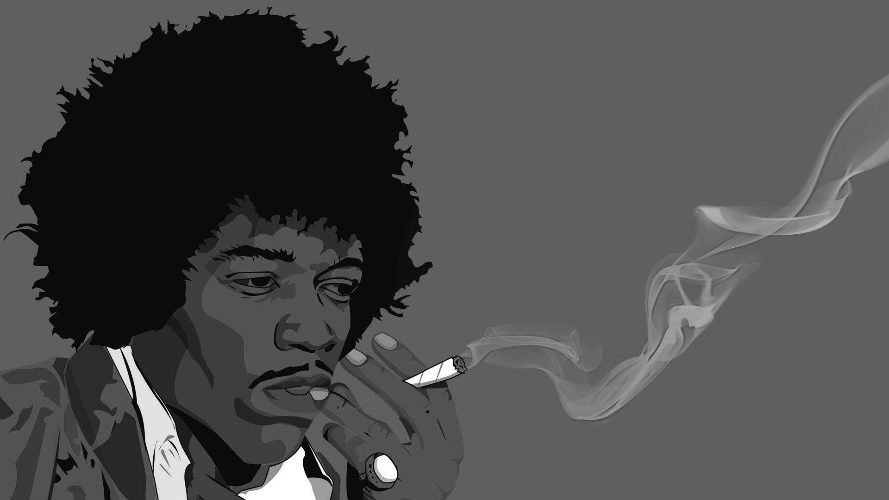
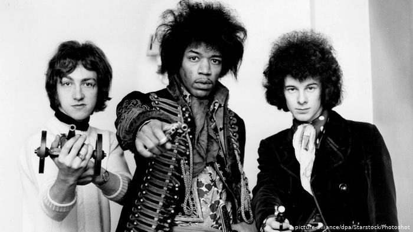
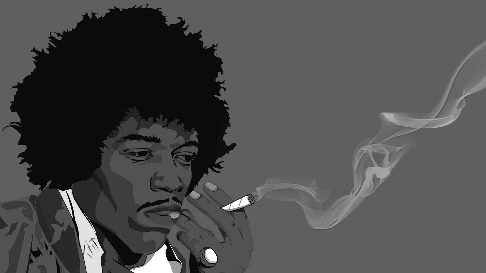

Jimi Hendrix
 





 


One of the Greatest Guitar Players Ever
Down the street you can hear her scream
You're a disgrace as she slams the door
In his drunken face And now he stands outside
He cries oh girl you must be mad
What happened to the sweet love you and me had
Against the door he leans and start a scene
And his tears fall and burn the garden green
And so castles made of sand
Fall in the sea Eventually
A little Indian brave who before he was ten
Played wargames in the woods with his Indian friends
And he built a dream that when he grew up
He would be a fearless warrior Indian chief
Many moons past and more the dream grew strong
Until tomorrow he would sing his first war song
And fight his first battle
But something went wrong
Surprise attack killed him in his sleep that night
And so castles made of sand
Fall in the sea Eventually
There was a young girl
Whose heart was a frown
'Cause she was crippled for life
And she couldn't speak a sound
And she wished and prayed
She could stop livin'
So she decide to die
She drew her wheelchair to the edge of the shore
And to her legs she smiled
You won't hurt me no more
But then a sight she'd never seen made her jump and say
Look a golden winged ship is passing my way
And it really didn't have to stop
It just kept on going And so castles made of sand
Slips into the sea Eventually